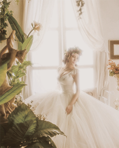
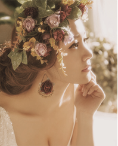
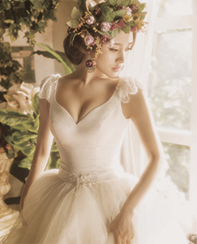
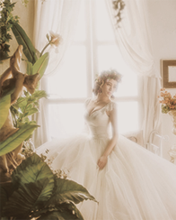
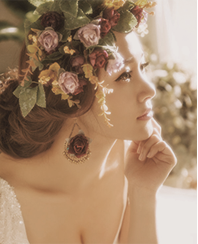
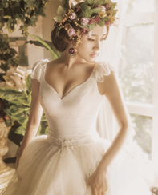

童话是美好的，是每个女孩子的梦想的色彩。穿着长长拖尾婚纱的女孩时而在薄雾迷蒙的丛林里张望着远方，时而在迷宫里有些慌张地奔跑，而她的心上人正乘着帆船匆匆赶来，演绎着童话故事里王子与公主英雄救美的桥段，不受现实元素所限制、带有魔幻色彩的创作风格。
Fairy tale is a good thing, is the dream of every girl's colour. Long trailing gown girl from time to time in the jungle of mist looked far away, from time to time in the maze in some hurry run, and her lover is in sailing in a hurry, deduce the prince and princess in the fairy tale hero to save the beautiful scene, should not be restricted by reality elements, with a style of magic.

To belong to your romantic memory
很自然、真实和潇洒。新娘、新郎可以衣着情侣服照恋爱写真。新人们衣着便装。此类便装婚纱照上情侣的丰硕了良多。娇俏、嗔怒、甜美，包括万象。相片内容上也加上良多在里面，游玩、打闹、求婚、依偎、回忆等等，几乎成为两人的恋爱记实了。
Very natural, real and natural and unrestrained. The bride and groom can couple dressed as collage of our life. New people casual clothes. Such casual wedding photos on the lovers of the rich. Charming is spruce, petulant, sweet, including vientiane. Photos on the content and also a lot inside, play, play, marry him, cuddle, memory, etc., almost become the two people in love documentary.
To belong to your romantic memory
以简约、前卫风格为主,着重于捕捉生活的每一瞬间，尤其注重影像中意境的融入。婉然一笑、深情相吻、雨中漫步、前街后院、花丛森林、商场天台、水中山上，能做得到的，他们都会有崭新的火花迸发，务求用新潮前卫的拍摄场景及手法，另辟蹊径，为你留下最美的回忆，也让婚纱摄影成为真正的80后艺术殿堂。
Give priority to with contracted, avant-garde style, focusing on the capture every moment of life, especially pay attention to the artistic conception in the image into. Wan ran a smile, affectionate kiss, walking in the rain forest, former street backyard, flowers, shopping malls tiantai mountain, water, can do it, they will have a brand new sparks, our fashionable avant-courier filming scenes and technique, path, as you leave the most beautiful recollection.
To belong to your romantic memory
新娘想让自己的婚纱照赋性、富有时代气息，切当令尚流行风的风格。可以选用这种风格，好比流行的奥运婚纱照和中国红浮现出新人们都丽和年夜气，这两组婚纱照同属中国红系列。中国红表达了心中的欢快，也能表达出热情和喜庆的空气，喜爱中国特色元素的新娘可以试一下这种风格。
The bride wanted to have their wedding photos natural instinct, rich period flavor, the right is the style of fashion. Can choose the style, such as popular wedding photos of the Olympic Games and China GongFu reveal both li and qi of the eve of the new people, the two groups of wedding photos belong to Chinese red series. Chinese red express the joy of the heart, but also to express warm festival in the air, like the bride of the Chinese characteristic elements can try this kind of style.
To belong to your romantic memory
1/5
400-3321-6578
fanliyan1123@163.com
山西省太原市学府街平阳路凯通大厦2层